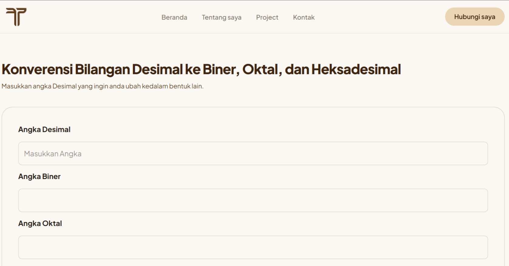

HTML
Tailwind CSS
JavaScript
Konverensi bilangan desimal ke biner, oktal dan hexadesimal
Yang saya kerjakan
Lihat websitenya
Website interaktif untuk membantu meng-konverensi angka desimal ke bentuk biner, oktal, dan hexadesimal
